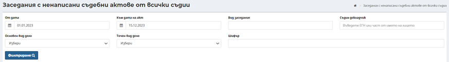
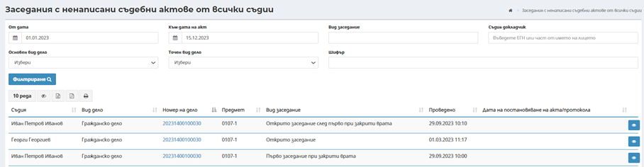

Екран Заседания с не написани съдебни актове от всички съдии дава възможност за търсене и преглед на структурирани данни за заседания, към които има ненаписани съдебни актове.

При първоначално зареждане на екран Заседания с не написани съдебни актове от всички съдии не се визуализират резултати. Наборът от данни може да бъде филтриран, в зависимост от въведените критерии в полетата в горната част на екрана. В меню Заседания с не написани съдебни актове от всички съдии могат да бъдат използвани следните филтри:
- От дата – избира се начална дата, от която да се генерира справката;
- Към дата на акт – избира се дата, към която трябва да се направи справката;
- Вид заседание – избира се вида заседание;
- Основен вид дело – избира се основен вид дело от номенклатура;
- Точен вид дело – избира се точен вид дело от номенклатура в зависимост от стойността избрана в поле основен вид дело;
- Шифър – Избор на предмет на делото от номенклатура според избрания точен вид дело. Чрез автоматично попълване след търсене по част от статистическия код, описание на предмет или законовото основание в номенклатура за предмет по шифър (статистически код), предмет и законово основание за дело. Има възможност за търсене и избор от списък с приложимите шифри, който се извежда на екран при натискане на бутон Избери, над полето Предмет на дело;
- Съдия докладчик - избира се чрез автоматично попълване след търсене по минимум три последователни символа от имената или идентификатор на активния съдия-докладчик.
След натискане на бутон Филтриране, резултатите се извеждат в долната половина на екрана в табличен вид:

За всеки запис в таблицата е възможно извършване на допълнителни действия, посредством бутон Преглед , чрез който се визуализират данни за конкретното дело според правата на потребителя генерирал справката.